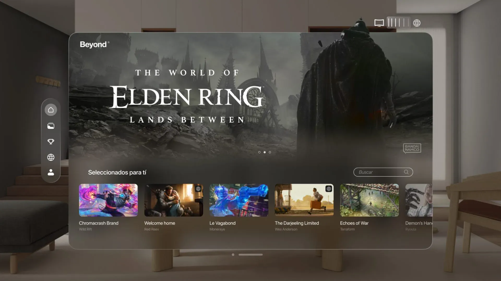
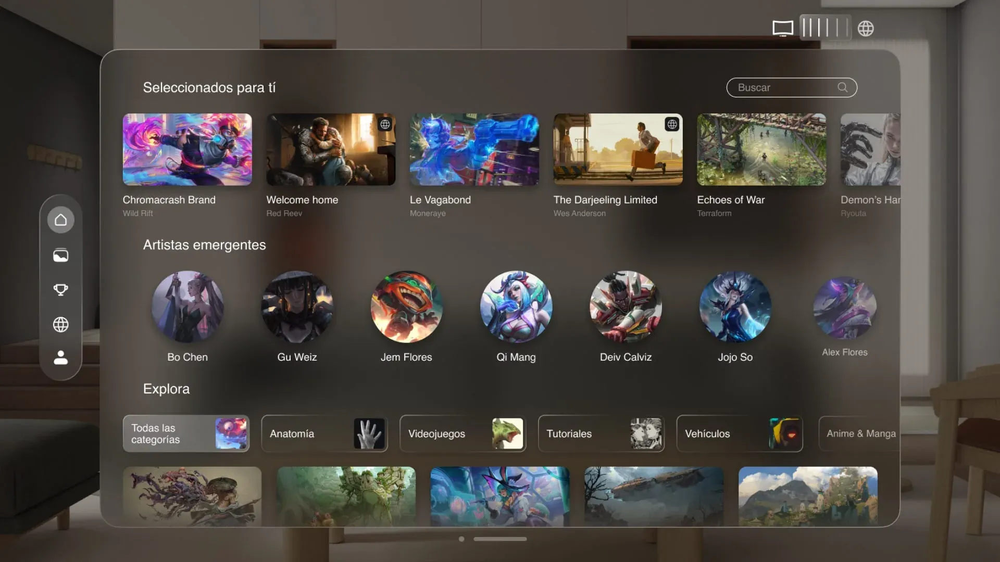
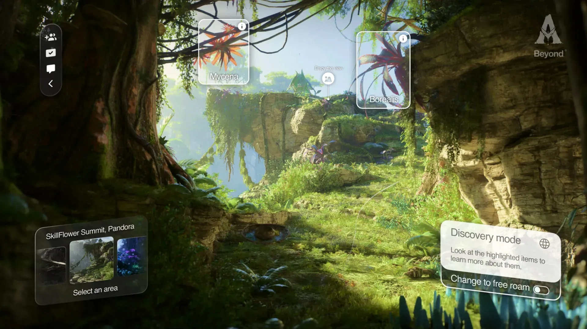

Beyond Frames
Beyond Frames nace de la visión de transformar profundamente la manera en que interactuamos
con el arte y el contenido audiovisual. Lejos de ser una galería estática o una simple
plataforma digital, este proyecto propone un espacio inmersivo que utiliza tecnología de
vanguardia —como la de Apple Vision Pro— para llevar la creatividad más allá de los límites
convencionales, conectando con emociones, ambientes y sensaciones que tradicionalmente solo
se
experimentan de forma presencial.
La propuesta parte de la magia que experimentan las personas en lugares tan impactantes como
La
Esfera de Las Vegas, museos con galerías vanguardistas o grandes festivales de visuales. Sin
embargo, la intención fue clara: hacer posible vivir esa inmersión desde cualquier lugar,
desde
la comodidad de casa, sin renunciar a la intensidad del momento. Beyond Frames es una
plataforma
diseñada para que explorar arte y experiencias inmersivas sea accesible, dinámico y
profundamente
personal.
Más que una galería digital, Beyond Frames es un ecosistema en el que la comunidad se vuelve
parte activa de la experiencia. Los usuarios pueden participar en desafíos creativos,
compartir
obras propias, conectar con otros artistas y construir perfiles que reflejen su evolución y
estilo. Esta dimensión social convierte la plataforma en algo vivo: un lugar donde crear,
aprender y colaborar es tan importante como contemplar o explorar.
El diseño de la experiencia no solo cubre la visualización de arte en entornos inmersivos,
sino
también la forma en que cada interacción está pensada para conectar con el individuo. El
proyecto plantea diferentes modos de uso, desde integrar obras en el espacio físico real del
usuario hasta sumergirse en universos virtuales que expanden la percepción. Esta
flexibilidad
convierte cada sesión en una experiencia única, adaptable al estado de ánimo, al contexto o
a la
intención de quien la vive.
Beyond Frames es un ejercicio de diseño estratégico que combina tecnología, narrativa y
comunidad
para trazar una nueva forma de disfrutar del arte. Representa mi capacidad para concebir
productos que no solo resuelven necesidades funcionales, sino que emocionan, conectan
personas y
reimaginan lo posible.



